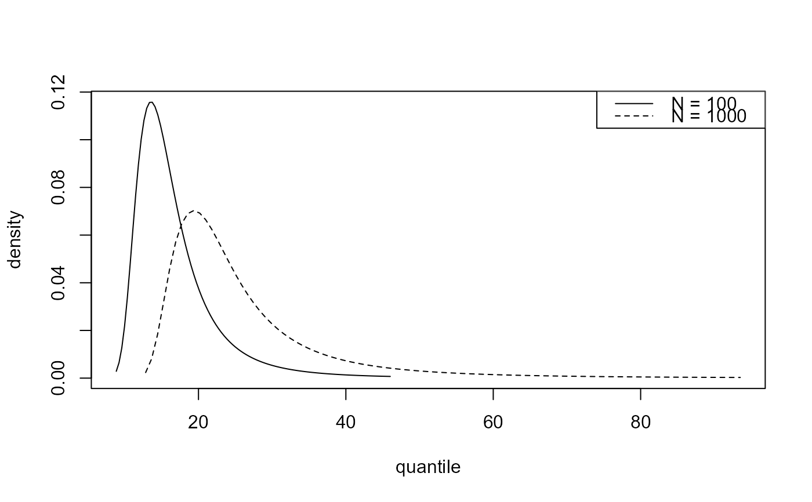
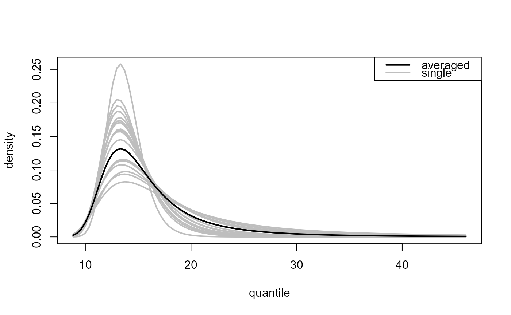

Predictive inference for the largest value observed in N years.
Source:R/predictive.R
predict.ithresh.Rdpredict method for class "ithresh". Predictive inferences can
either be based on a single training threshold or using a weighted
average of inferences over multiple training thresholds. A single
threshold may chosen to be the best performing threshold, as judged by the
measure of predictive performance calculated by ithresh or
chosen by the user. The weights used in the latter case are based on the
measures of predictive performance and prior probabilities assigned to the
training thresholds. By default all thresholds are given the same
prior probability but the user can specify their own prior.
# S3 method for ithresh predict( object, npy = NULL, n_years = 100, which_u = c("best", "all"), which_v = 1L, u_prior = rep(1, length(object$u_vec)), type = c("p", "d", "q", "i", "r"), hpd = FALSE, x = NULL, ... )
Arguments
| object | An object of class |
|---|---|
| npy | A numeric scalar. The mean number of observations per year of data, after excluding any missing values, i.e. the number of non-missing observations divided by total number of years of non-missing data. |
| n_years | A numeric vector. Value(s) of N. If |
| which_u | Either a character scalar or a numeric scalar.
If If If Otherwise, |
| which_v | A numeric scalar. Indicates which element of
|
| u_prior | A numeric vector. Prior probabilities for the training
thresholds in Only the first
If |
| type | A character vector.
Passed to
If |
| hpd | A logical scalar. The argument |
| x | A numeric vector. The argument |
| ... | Additional arguments to be passed to
|
Value
An list object of class "ithreshpred" with a similar structure to
an object of class "evpred" returned from
predict.evpost is returned invisibly.
In addition, the object contains
u_vec = object$u_vec and v_vec = object$v_vec,
which_v and the index best_u in
u_vec = object$u_vec of the best training threshold based on
the value of which_v.
It also contains the value of the Box-Cox transformation parameter
lambda. This will always be equal to 1 if object was
returned from ithresh.
If which_u = "all" then
the list also contains the posterior threshold weights in component
post_thresh_wtsthe component
yis a matrix withlength{x}rows and 1 +length(object$u_vec) - length(object$v_vec) + which_vcolumns. Column 1 contains the estimated predictive distribution function (type = "p") or density function (type = "d") obtained using a weighted average of the inferences over different training thresholds. The other columns contain the estimated functions for each of the training thresholds inu_vec.
Details
The function predict.evpost is used to
perform predictive based on the binomial-GP posterior sample generated
using a given training threshold. For mathematical details of the
single threshold and multiple threshold cases see Sections 2.3 and 3 of
Northrop et al. (2017)
respectively.
References
Northrop, P. J., Attalides, N. and Jonathan, P. (2017) Cross-validatory extreme value threshold selection and uncertainty with application to ocean storm severity. Journal of the Royal Statistical Society Series C: Applied Statistics, 66(1), 93-120. https://doi.org/10.1111/rssc.12159
See also
ithresh for threshold selection in the i.i.d. case
based on leave-one-out cross-validation.
plot.ithreshpred for the S3 plot method for objects
of class ithreshpred.
Examples
# Note: #' In the examples below validation thresholds rather higher than is # advisable have been used, with far fewer excesses than the minimum of # 50 suggested by Jonathan and Ewans (2013). # Gulf of Mexico significant wave heights, default priors. u_vec_gom <- quantile(gom, probs = seq(0, 0.9, by = 0.05)) gom_cv <- ithresh(data = gom, u_vec = u_vec_gom, n_v = 3) # Note: gom_cv$npy contains the correct value of npy (it was set in the # call to ithresh, via attr(gom, "npy"). # If object$npy doesn't exist then the argument npy must be supplied # in the call to predict(). ### Best training threshold based on the lowest validation threshold # Predictive distribution function best_p <- predict(gom_cv, n_years = c(100, 1000)) plot(best_p)# Predictive density function best_d <- predict(gom_cv, type = "d", n_years = c(100, 1000)) plot(best_d)# Predictive intervals best_i <- predict(gom_cv, n_years = c(100, 1000), type = "i", hpd = TRUE, level = c(95, 99)) plot(best_i, which_int = "both")#> v v quantile best u best u quantile index of u_vec #> 1 4.6070 80 3.3878 60 13 #> 2 5.1302 85 3.9754 70 15 #> 3 5.8246 90 3.9754 70 15### All thresholds plus weighted average of inferences over all thresholds # Predictive distribution function all_p <- predict(gom_cv, which_u = "all") plot(all_p)